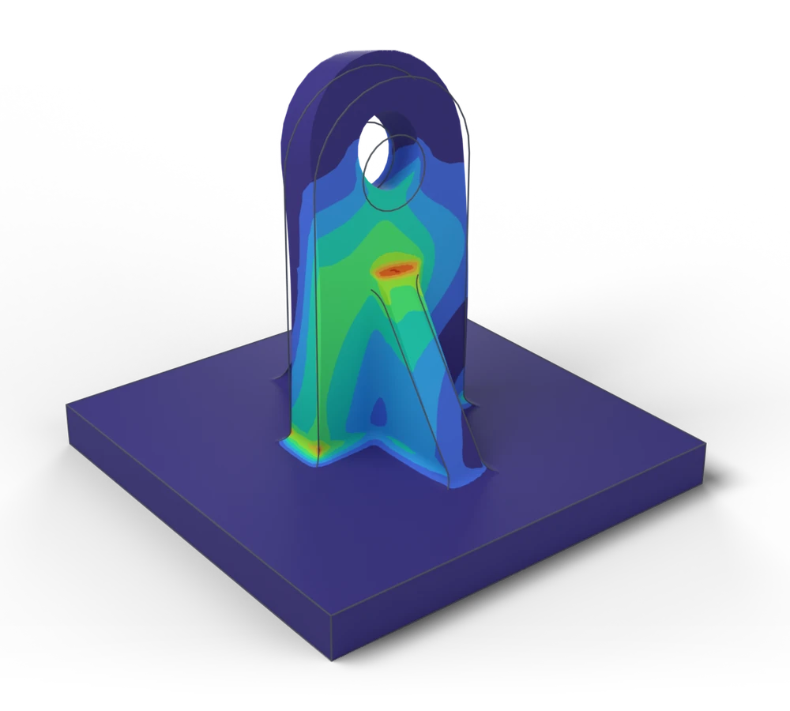

<title>Verified Simulation Portfolio</title>
<meta name="claude:viewport-fit-sides" content="cover">
<link rel="preconnect" href="https://fonts.googleapis.com">
<link rel="preconnect" href="https://fonts.gstatic.com" crossorigin>
<link rel="stylesheet" href="https://fonts.googleapis.com/css2?family=Archivo:wdth,wght@62..125,400..800&family=JetBrains+Mono:wght@400;500&family=Source+Sans+3:ital,wght@0,400;0,600;1,400&display=swap">
<style>
/* Layout: a solver viewport opens the page (real renders, legends in the CAE convention, the render checks as the status line); then the task loop, the agent's procedures, a filterable case gallery, findings, and the full study sheets at the same 1180px width as the rest (body text still capped near 70ch). */
:root {
  --bg: #eef1f5;
  --surface: #ffffff;
  --ink: #0e1621;
  --ink-2: #4a5766;
  --ink-3: #788596;
  --rule: #d5dce5;
  --accent: #2346c4;
  --accent-soft: #e4e9fb;
  --hot: #c9461a;
  --pass: #157447; --pass-bg: #e0f1e7;
  --fail: #b0381a; --fail-bg: #fbe6df;
  --warn: #855f00; --warn-bg: #f9efd6;
  --plate: #fcfcfb;
  --vp-top: #121d33; --vp-bot: #5a7193; --vp-ink: #edf1f8; --vp-ink-2: #b4c1d6; --vp-line: rgba(237, 241, 248, 0.16);
  --term-bg: #0f1620; --term-ink: #d9e1ea; --term-dim: #7f8c9d; --term-pass: #7fd6a2; --term-fail: #ff9b7b; --term-line: #223042;
  --font-display: "Archivo", "Arial Narrow", system-ui, sans-serif;
  --font-body: "Source Sans 3", "Segoe UI", system-ui, -apple-system, sans-serif;
  --font-data: "JetBrains Mono", ui-monospace, "Cascadia Mono", Consolas, monospace;
  --radius: 4px;
}
@media (prefers-color-scheme: dark) {
  :root:not([data-theme="light"]) {
    --bg: #0b1016; --surface: #121a24; --ink: #e8edf3; --ink-2: #a2b0bf; --ink-3: #6e7c8c; --rule: #233041;
    --accent: #8fa9ff; --accent-soft: #1b2645; --hot: #ff8d5f;
    --pass: #7fd6a2; --pass-bg: #14301f; --fail: #ff9b7b; --fail-bg: #3a1e16; --warn: #e9c46a; --warn-bg: #33290f;
    color-scheme: dark;
  }
}
:root[data-theme="dark"] {
  --bg: #0b1016; --surface: #121a24; --ink: #e8edf3; --ink-2: #a2b0bf; --ink-3: #6e7c8c; --rule: #233041;
  --accent: #8fa9ff; --accent-soft: #1b2645; --hot: #ff8d5f;
  --pass: #7fd6a2; --pass-bg: #14301f; --fail: #ff9b7b; --fail-bg: #3a1e16; --warn: #e9c46a; --warn-bg: #33290f;
  color-scheme: dark;
}

* { box-sizing: border-box; }
html { scroll-behavior: smooth; }
@media (prefers-reduced-motion: reduce) { html { scroll-behavior: auto; } *, *::before, *::after { transition: none !important; animation: none !important; } }
body {
  background: var(--bg); color: var(--ink);
  font-family: var(--font-body); font-size: 17px; line-height: 1.6;
  padding-left: max(16px, env(safe-area-inset-left, 0px));
  padding-right: max(16px, env(safe-area-inset-right, 0px));
  padding-block: 0 72px;
}
body::before { content: ""; position: fixed; inset: 0 0 auto; height: env(safe-area-inset-top, 0px); z-index: 10; background: var(--bg); }
.wrap { max-width: 1180px; margin-inline: auto; }
.read { max-width: 820px; margin-inline: auto; }
h1, h2, h3 { font-family: var(--font-display); text-wrap: balance; margin: 0; line-height: 1.1; }
p { margin: 0; }
a { color: var(--accent); text-underline-offset: 3px; }
:focus-visible { outline: 2px solid var(--accent); outline-offset: 3px; border-radius: 2px; }
.eyebrow, .label {
  font-family: var(--font-data); font-size: 0.74rem; letter-spacing: 0.1em; text-transform: uppercase; color: var(--ink-2);
}
code { font-family: var(--font-data); font-size: 0.85em; }

/* ------------------------------------------------------------- top bar */
.topbar {
  position: sticky; top: env(safe-area-inset-top, 0px); z-index: 9;
  background: color-mix(in srgb, var(--bg) 88%, transparent);
  backdrop-filter: blur(10px); -webkit-backdrop-filter: blur(10px);
  border-bottom: 1px solid var(--rule);
  margin-left: calc(-1 * max(16px, env(safe-area-inset-left, 0px)));
  margin-right: calc(-1 * max(16px, env(safe-area-inset-right, 0px)));
  padding-left: max(16px, env(safe-area-inset-left, 0px));
  padding-right: max(16px, env(safe-area-inset-right, 0px));
}
.topbar .wrap { display: flex; align-items: center; justify-content: space-between; gap: 16px; min-height: 52px; }
.brand { font-family: var(--font-display); font-weight: 700; font-stretch: 110%; font-size: 0.98rem; letter-spacing: 0.01em; color: var(--ink); text-decoration: none; display: flex; align-items: center; gap: 10px; white-space: nowrap; }
.brand-mark { width: 22px; height: 12px; display: grid; grid-template-columns: repeat(6, 1fr); border-radius: 2px; overflow: hidden; }
.brand-mark i { display: block; }
.topnav { display: flex; gap: 4px; overflow-x: auto; scrollbar-width: none; }
.topnav a { font-size: 0.9rem; color: var(--ink-2); text-decoration: none; padding: 6px 10px; border-radius: var(--radius); white-space: nowrap; }
.topnav a:hover { color: var(--ink); background: var(--accent-soft); }
.navgroup { display: flex; align-items: center; gap: 8px; min-width: 0; }
.topnav { min-width: 0; }
.nav-contact { flex: none; font-size: 0.9rem; font-weight: 600; color: var(--accent); text-decoration: none; padding: 5px 12px; border: 1px solid var(--accent); border-radius: var(--radius); white-space: nowrap; }
.nav-contact:hover { background: var(--accent-soft); }
@media (max-width: 640px) { .topnav a:nth-child(n+2) { display: none; } .topnav a, .nav-contact { font-size: 0.86rem; } .topnav a { padding: 6px 7px; } .nav-contact { padding: 4px 10px; } }
@media (max-width: 400px) { .topnav { display: none; } }

/* ------------------------------------------------------------- hero */
.hero { padding-block: clamp(32px, 5vw, 64px) 28px; display: grid; grid-template-columns: minmax(0, 1fr) auto; gap: 22px 56px; align-items: end; }
.hero-text { display: grid; gap: 20px; min-width: 0; }
@media (max-width: 900px) { .hero { grid-template-columns: 1fr; } }
.hero h1 {
  font-size: clamp(2.5rem, 6.4vw, 5rem); font-weight: 800; font-stretch: 112%;
  letter-spacing: -0.025em; line-height: 0.98; max-width: 18ch;
}
.hero h1 em { font-style: normal; color: var(--accent); display: block; }
.lede { font-size: clamp(1.08rem, 1.6vw, 1.28rem); color: var(--ink-2); max-width: 62ch; line-height: 1.55; }
.lede b { color: var(--ink); font-weight: 600; }
.hero-cta { display: flex; flex-wrap: wrap; align-items: center; gap: 12px 14px; }
.cta-ghost { display: inline-block; padding: 10px 20px; border-radius: var(--radius); border: 1px solid var(--accent); color: var(--accent); font-weight: 700; font-size: 1.02rem; text-decoration: none; }
.cta-ghost:hover { background: var(--accent-soft); }
.hero-links { display: flex; flex-wrap: wrap; gap: 6px 18px; margin-left: 8px; font-size: 0.93rem; font-weight: 600; }
.hero-links a.ext::after { content: " ↗"; }
@media (max-width: 560px) { .hero-links { margin-left: 0; flex-basis: 100%; } }
.stats { display: grid; grid-template-columns: repeat(2, auto); gap: 18px 40px; margin: 0; padding: 0 0 6px; }
@media (max-width: 900px) { .stats { grid-template-columns: repeat(4, auto); justify-content: start; } }
@media (max-width: 560px) { .stats { grid-template-columns: repeat(2, auto); } }
.stats div { display: grid; gap: 0; }
.stats dt { order: 2; font-family: var(--font-data); font-size: 0.72rem; letter-spacing: 0.08em; text-transform: uppercase; color: var(--ink-3); }
.stats dd { order: 1; margin: 0; font-family: var(--font-display); font-weight: 800; font-stretch: 110%; font-size: clamp(1.7rem, 3vw, 2.6rem); font-variant-numeric: tabular-nums; line-height: 1.2; }

/* ------------------------------------------------------------- viewport */
.viewport { display: grid; gap: 12px; }
.vp {
  position: relative; border-radius: 6px; overflow: hidden; color: var(--vp-ink);
  background: linear-gradient(180deg, var(--vp-top) 0%, var(--vp-bot) 100%);
  box-shadow: 0 1px 0 rgba(255,255,255,0.06) inset, 0 24px 48px -28px rgba(10, 20, 40, 0.55);
  display: grid; grid-template-columns: 190px minmax(0, 1fr); grid-template-rows: minmax(0, 1fr) auto auto;
  min-height: clamp(360px, 52vw, 620px);
}
.vp::after { /* faint viewport grid */
  content: ""; position: absolute; inset: 0; pointer-events: none;
  background-image: linear-gradient(var(--vp-line) 1px, transparent 1px), linear-gradient(90deg, var(--vp-line) 1px, transparent 1px);
  background-size: 64px 64px; opacity: 0.18; mask-image: linear-gradient(180deg, transparent, #000 30%, #000 70%, transparent);
}
.legend { padding: 20px 0 16px 20px; display: grid; align-content: start; gap: 10px; position: relative; z-index: 1; }
.legend-title { font-family: var(--font-data); font-size: 0.8rem; line-height: 1.35; }
.legend-title small { display: block; color: var(--vp-ink-2); font-size: 0.72rem; }
.legend-body { display: grid; grid-template-columns: 22px auto; gap: 8px; }
.swatches { display: grid; border: 1px solid rgba(255,255,255,0.35); }
.swatches i { display: block; height: clamp(14px, 1.7vw, 19px); transition: transform 0.45s cubic-bezier(.2,.7,.2,1); transform-origin: left; }
.vp.switching .swatches i { transform: scaleX(0.55); }
.ticks { position: relative; font-family: var(--font-data); font-size: 0.7rem; color: var(--vp-ink); font-variant-numeric: tabular-nums; min-width: 9ch; }
.ticks span { position: absolute; left: 0; transform: translateY(-50%); white-space: nowrap; }
.stage { position: relative; z-index: 1; display: grid; place-items: center; padding: 20px 28px 8px 8px; min-width: 0; }
.stage img { max-width: 100%; max-height: clamp(280px, 44vw, 520px); width: auto; height: auto; transition: opacity 0.35s ease, transform 0.5s cubic-bezier(.2,.7,.2,1); filter: drop-shadow(0 18px 24px rgba(0, 8, 20, 0.35)); }
.vp.switching .stage img { opacity: 0; transform: translateY(6px) scale(0.985); }
.vp-3d { position: absolute; top: 14px; right: 16px; z-index: 3; font: 500 0.76rem var(--font-data); letter-spacing: 0.02em;
  color: var(--vp-ink); background: rgba(8, 14, 26, 0.45); border: 1px solid rgba(237, 241, 248, 0.32); border-radius: 999px;
  padding: 6px 14px; cursor: pointer; backdrop-filter: blur(4px); }
.vp-3d:hover { background: rgba(8, 14, 26, 0.7); border-color: rgba(237, 241, 248, 0.6); }
.vp-3d[aria-pressed="true"] { background: var(--vp-ink); color: var(--vp-top); }
.vp-3d[hidden] { display: none; }
.vp-anim { right: auto; left: 50%; transform: translateX(-50%); }
@media (max-width: 720px) { .vp-anim { top: auto; bottom: 34px; } }
.vp-hint { position: absolute; left: 50%; bottom: 8px; transform: translateX(-50%); z-index: 3; margin: 0;
  width: max-content; max-width: calc(100% - 24px); text-align: center;
  font: 0.7rem/1.4 var(--font-data); color: var(--vp-ink-2); pointer-events: none; }
@media (max-width: 640px) { .vp-hint .long { display: none; } }
.vp-canvas { position: absolute; inset: 0; width: 100%; height: 100%; display: none; touch-action: none; cursor: grab; }
.vp-canvas:active { cursor: grabbing; }
.vp.is-3d .vp-canvas { display: block; }
.vp-canvas:focus-visible { outline: 2px solid var(--vp-ink); outline-offset: -4px; border-radius: 4px; }
.vp.is-3d .stage img, .vp.is-3d .triad { visibility: hidden; }
.vp.is-figure .legend, .vp.is-plain .legend, .vp.is-figure .triad, .vp.is-plain .triad { display: none; }
.vp.is-figure .stage, .vp.is-plain .stage { grid-column: 1 / -1; padding: 20px 24px 12px; }
.vp.is-figure .stage img { background: var(--plate); border-radius: 4px; padding: 10px; filter: none; max-height: clamp(260px, 40vw, 480px); }
.vp { scroll-margin-top: 64px; }
.vp-scrub { grid-column: 1 / -1; position: relative; z-index: 2; display: flex; align-items: center; gap: 12px; padding: 8px 20px; border-top: 1px solid var(--vp-line); background: rgba(8, 14, 26, 0.18); }
.vp-scrub[hidden], .vp.is-3d .vp-scrub { display: none; }
.vp-play { flex: none; width: 34px; height: 34px; border-radius: 50%; border: 1px solid rgba(237, 241, 248, 0.4); background: rgba(8, 14, 26, 0.45); color: var(--vp-ink); font-size: 0.85rem; cursor: pointer; }
.vp-play:hover { border-color: var(--vp-ink); }
#vp-range { flex: 1; min-width: 0; accent-color: #8fb4ff; }
#vp-step { flex: none; font: 0.76rem/1.3 var(--font-data); color: var(--vp-ink); font-variant-numeric: tabular-nums; min-width: 44ch; text-align: right; }
@media (max-width: 900px) { .vp-scrub { flex-wrap: wrap; padding: 8px 14px 10px; gap: 6px 10px; } #vp-step { flex-basis: 100%; min-width: 0; text-align: left; font-size: 0.72rem; } }
.triad { position: absolute; left: 4px; bottom: 6px; width: 54px; height: 54px; opacity: 0.85; }
.status {
  grid-column: 1 / -1; position: relative; z-index: 1;
  font-family: var(--font-data); font-size: 0.74rem; line-height: 1.6; color: var(--vp-ink-2);
  padding: 10px 20px 14px; border-top: 1px solid var(--vp-line); background: rgba(8, 14, 26, 0.28);
  display: grid; gap: 1px;
}
.status b { color: var(--vp-ink); font-weight: 500; }
.status .chk { color: #9fe3b9; }
.vp-note p { font-size: 0.92rem; color: var(--ink-2); max-width: 80ch; }
@media (max-width: 720px) {
  .vp { grid-template-columns: 1fr; grid-template-rows: auto minmax(0, 1fr) auto auto; min-height: 0; }
  .legend { padding: 16px 16px 0; }
  .legend-body { grid-template-columns: 1fr; gap: 4px; }
  .swatches { grid-auto-flow: column; grid-auto-columns: 1fr; direction: rtl; }
  .swatches i { height: 12px; }
  .ticks { height: 1.1em; }
  .ticks span { transform: none; }
  .ticks span:not(:first-child):not(:last-child) { display: none; }
  .ticks span:first-child { left: auto; right: 0; top: 0 !important; }
  .ticks span:last-child { left: 0; top: 0 !important; }
  .stage { padding: 8px 12px 12px; }
  .stage img { max-height: 300px; }
  .triad { display: none; }
}

/* ------------------------------------------------------------- sections */
.band { padding-block: clamp(56px, 8vw, 104px) 0; display: grid; grid-template-columns: minmax(0, 1fr); gap: 28px; scroll-margin-top: 64px; }
.band-head { display: grid; gap: 10px; max-width: 760px; }
.band-head h2 { font-size: clamp(1.9rem, 3.6vw, 2.8rem); font-weight: 750; font-stretch: 108%; letter-spacing: -0.015em; }
.band-head p { color: var(--ink-2); font-size: 1.06rem; max-width: 64ch; }

/* how I work: sub-parts */
h3.sub { font-family: var(--font-data); font-size: 0.8rem; font-weight: 500; letter-spacing: 0.12em; text-transform: uppercase; color: var(--accent); display: flex; align-items: center; gap: 14px; margin-top: 12px; }
h3.sub::after { content: ""; flex: 1; height: 1px; background: var(--rule); }
.sub-lede { color: var(--ink-2); max-width: 70ch; margin-top: -12px; }
.code-facts { color: var(--ink-2); font-size: 0.95rem; max-width: 80ch; }
.skills.now { grid-template-columns: repeat(2, minmax(0, 1fr)); }
@media (max-width: 760px) { .skills.now { grid-template-columns: 1fr; } }

/* task loop */
.loop { display: grid; grid-template-columns: minmax(0, 1fr) minmax(0, 1.1fr); gap: 28px; align-items: start; }
.steps { list-style: none; margin: 0; padding: 0; display: grid; gap: 0; counter-reset: step; border-top: 1px solid var(--rule); }
.steps li { display: grid; grid-template-columns: 3rem minmax(0, 1fr); gap: 4px 12px; padding: 16px 0; border-bottom: 1px solid var(--rule); }
.steps li::before { counter-increment: step; content: counter(step, decimal-leading-zero); grid-row: span 2; font-family: var(--font-data); font-size: 0.85rem; color: var(--accent); padding-top: 4px; }
.steps b { font-family: var(--font-display); font-size: 1.18rem; font-weight: 700; font-stretch: 105%; }
.steps span { color: var(--ink-2); font-size: 0.98rem; }
.term { background: var(--term-bg); color: var(--term-ink); border-radius: 6px; overflow: hidden; font-family: var(--font-data); font-size: 0.8rem; line-height: 1.7; border: 1px solid var(--term-line); }
.term-bar { display: flex; align-items: center; gap: 7px; padding: 10px 14px; border-bottom: 1px solid var(--term-line); color: var(--term-dim); }
.term-bar i { width: 9px; height: 9px; border-radius: 50%; background: var(--term-line); display: inline-block; }
.term-bar span { margin-left: 8px; overflow: hidden; text-overflow: ellipsis; white-space: nowrap; }
.term pre { margin: 0; padding: 14px 16px 16px; overflow-x: auto; white-space: pre; }
.term .p { color: var(--term-dim); }
.t-row { display: block; }
.t-row > span { display: inline-block; }
.t-id { width: 27ch; } .t-pass, .t-fail { width: 6ch; } .t-num { width: 11ch; }
.t-id { color: var(--term-ink); }
.t-pass { color: var(--term-pass); }
.t-fail { color: var(--term-fail); }
.t-num, .t-tol { color: var(--term-dim); font-variant-numeric: tabular-nums; }
.term .verdict { color: var(--term-fail); }
.term .ok { color: var(--term-pass); }
@media (max-width: 860px) { .loop { grid-template-columns: 1fr; } }

/* agent skills */
.skills { display: grid; grid-template-columns: repeat(3, minmax(0, 1fr)); gap: 1px; background: var(--rule); border: 1px solid var(--rule); border-radius: 6px; overflow: hidden; }
.skill { background: var(--surface); padding: 18px 20px; display: grid; gap: 6px; align-content: start; min-width: 0; }
.skill code { font-size: 0.82rem; color: var(--accent); }
.skill b { font-family: var(--font-display); font-weight: 700; font-size: 1.08rem; }
.skill p { color: var(--ink-2); font-size: 0.95rem; }
.rules { display: flex; flex-wrap: wrap; gap: 8px 10px; list-style: none; margin: 0; padding: 0; }
.rules li { font-size: 0.92rem; padding: 6px 12px; border: 1px solid var(--rule); border-radius: 999px; background: var(--surface); }
.rules li::before { content: "✓"; color: var(--pass); margin-right: 8px; font-weight: 600; }
/* planned studies: same grid as the skills, marked as not yet run */
.plan .skill { gap: 10px; }
.plan-meta { display: flex; flex-wrap: wrap; justify-content: space-between; align-items: center; gap: 6px 10px; font-family: var(--font-data); font-size: 0.72rem; letter-spacing: 0.08em; text-transform: uppercase; color: var(--ink-3); }
.plan-meta .no { color: var(--accent); }
.plan-tag { padding: 2px 9px; border: 1px dashed var(--ink-3); border-radius: 999px; }
.plan-tag.done { border: 1px solid var(--pass); color: var(--pass); background: var(--pass-bg); }
.plan .skill p b { display: block; font-family: var(--font-data); font-weight: 500; font-size: 0.7rem; letter-spacing: 0.08em; text-transform: uppercase; color: var(--ink-3); margin-bottom: 2px; }
.plan a.ext::after { content: " ↗"; }
.plan .tools { font-family: var(--font-data); font-size: 0.78rem; color: var(--ink-3); }
@media (max-width: 900px) { .skills { grid-template-columns: repeat(2, minmax(0, 1fr)); } }
@media (max-width: 560px) { .skills { grid-template-columns: 1fr; } }

/* gallery */
.filters { display: flex; flex-wrap: wrap; gap: 8px; }
.filters button { font: inherit; font-size: 0.9rem; cursor: pointer; padding: 6px 14px; border-radius: 999px; border: 1px solid var(--rule); background: var(--surface); color: var(--ink-2); }
.filters button:hover { color: var(--ink); border-color: var(--ink-3); }
.filters button[aria-pressed="true"] { background: var(--ink); border-color: var(--ink); color: var(--bg); }
.gallery { display: grid; grid-template-columns: repeat(4, minmax(0, 1fr)); gap: 14px; }
.card { display: grid; grid-template-rows: auto 1fr; background: var(--surface); border: 1px solid var(--rule); border-radius: 6px; overflow: hidden; color: var(--ink); text-decoration: none; transition: transform 0.25s ease, box-shadow 0.25s ease, border-color 0.25s; }
.card[hidden] { display: none; }
.card:hover { transform: translateY(-3px); border-color: var(--accent); box-shadow: 0 18px 32px -24px rgba(20, 40, 90, 0.5); }
.card[aria-current="true"] { border-color: var(--accent); box-shadow: inset 0 0 0 1px var(--accent); }
.gallery { grid-auto-flow: dense; }
.card.wide { grid-column: span 2; grid-template-columns: minmax(0, 1.15fr) minmax(0, 1fr); grid-template-rows: auto; }
.card.wide .thumb { border-bottom: 0; border-right: 1px solid var(--rule); aspect-ratio: auto; height: 100%; min-height: 180px; }
.card.wide .card-body { align-content: center; padding: 16px 18px; }
@media (max-width: 560px) { .card.wide { grid-template-columns: 1fr; } .card.wide .thumb { border-right: 0; border-bottom: 1px solid var(--rule); aspect-ratio: 16 / 10; height: auto; min-height: 0; } }
.vp-parts { position: absolute; top: 14px; left: 14px; z-index: 3; display: flex; flex-wrap: wrap; gap: 6px; max-width: calc(100% - 160px); }
.vp-parts[hidden] { display: none; }
.vp-parts button { font: 500 0.74rem var(--font-data); color: var(--vp-ink); background: rgba(8, 14, 26, 0.45); border: 1px solid rgba(237, 241, 248, 0.32); border-radius: 999px; padding: 5px 12px; cursor: pointer; }
.vp-parts button[aria-pressed="true"] { background: var(--vp-ink); color: var(--vp-top); }
.vp.is-3d .vp-parts { display: flex; }
@media (max-width: 720px) { .vp-parts { position: static; max-width: none; padding: 0 0 8px; } }
.part { display: grid; gap: 18px; padding-top: 18px; border-top: 1px solid var(--rule); min-width: 0; scroll-margin-top: 68px; }
.part > .label { color: var(--accent); }
.part-title { font-family: var(--font-display); font-size: clamp(1.25rem, 2.2vw, 1.55rem); font-weight: 750; margin-top: -10px; }
.card:has(img[data-loop]) .meta::after { content: "▶ moves"; margin-left: auto; color: var(--ink-3); letter-spacing: 0.04em; }
.thumb { display: block; aspect-ratio: 16 / 10; background: var(--plate); border-bottom: 1px solid var(--rule); }
.thumb img { width: 100%; height: 100%; object-fit: contain; display: block; }
.card-body { display: grid; gap: 6px; padding: 12px 14px 14px; align-content: start; }
.meta { display: flex; gap: 10px; font-family: var(--font-data); font-size: 0.7rem; letter-spacing: 0.08em; text-transform: uppercase; color: var(--ink-3); }
.meta .no { color: var(--accent); white-space: nowrap; }
.meta { flex-wrap: wrap; row-gap: 2px; }
.card-title { font-family: var(--font-display); font-weight: 700; font-stretch: 104%; font-size: 1.02rem; line-height: 1.25; }
.card-foot { display: flex; flex-wrap: wrap; justify-content: space-between; align-items: center; gap: 6px; margin-top: 2px; }
.tools { font-family: var(--font-data); font-size: 0.72rem; color: var(--ink-3); }
.v { font-family: var(--font-data); font-size: 0.72rem; padding: 2px 8px; border-radius: 999px; white-space: nowrap; }
.v-pass { color: var(--pass); background: var(--pass-bg); }
.v-fail { color: var(--fail); background: var(--fail-bg); }
.v-mixed { color: var(--warn); background: var(--warn-bg); }
@media (max-width: 1000px) { .gallery { grid-template-columns: repeat(2, minmax(0, 1fr)); } }
@media (max-width: 420px) { .card .tools { display: none; } .card-title { font-size: 0.95rem; } }

/* findings */
.findings { display: grid; grid-template-columns: repeat(2, minmax(0, 1fr)); gap: 18px; }
.findings .finding:first-child { grid-column: 1 / -1; }
.finding { background: var(--surface); border: 1px solid var(--rule); border-top: 3px solid var(--hot); border-radius: 2px; padding: 20px 22px 22px; display: grid; gap: 10px; align-content: start; }
.finding .label { color: var(--hot); }
.finding h3 { font-size: 1.28rem; font-weight: 700; font-stretch: 104%; line-height: 1.2; }
.finding p { color: var(--ink-2); font-size: 0.98rem; }
.finding a { font-size: 0.92rem; font-weight: 600; }
@media (max-width: 760px) { .findings { grid-template-columns: 1fr; } }

/* capability table */
.table-wrap { overflow-x: auto; border: 1px solid var(--rule); border-radius: 6px; background: var(--surface); }
table { border-collapse: collapse; width: 100%; font-size: 0.94rem; min-width: 600px; }
th, td { text-align: left; padding: 11px 16px; border-bottom: 1px solid var(--rule); vertical-align: top; }
tr:last-child td { border-bottom: 0; }
th { font-family: var(--font-data); font-weight: 500; font-size: 0.72rem; letter-spacing: 0.08em; text-transform: uppercase; color: var(--ink-3); }
td:nth-child(2) { font-family: var(--font-data); font-size: 0.8rem; color: var(--ink-2); }

/* ------------------------------------------------------------- study sheets (existing content) */
.picks { display: grid; }
.picks > .pick[hidden] { display: none !important; }
h2.discipline {
  font-family: var(--font-data); font-size: 0.8rem; font-weight: 500; letter-spacing: 0.12em; text-transform: uppercase;
  color: var(--accent); display: flex; align-items: center; gap: 14px; margin-top: 28px;
}
h2.discipline::after { content: ""; flex: 1; height: 1px; background: var(--rule); }
.picks .study {
  background: var(--surface); border: 1px solid var(--rule); border-radius: 6px;
  padding: clamp(20px, 3.5vw, 36px); display: grid; gap: 18px; scroll-margin-top: 68px; min-width: 0;
}
.study-head { display: grid; gap: 6px; padding-bottom: 14px; border-bottom: 1px solid var(--rule); }
.study-head .label { color: var(--accent); }
.study-head h2 { font-size: clamp(1.5rem, 2.8vw, 2rem); font-weight: 750; font-stretch: 106%; letter-spacing: -0.01em; }
ul.proof li, .caught li { max-width: 70ch; }
.study h3 { font-family: var(--font-display); font-size: 1.05rem; font-weight: 700; margin-top: 4px; }
.answer { background: var(--accent-soft); border-radius: var(--radius); padding: 16px 20px; display: grid; gap: 10px; }
.chips { display: flex; flex-wrap: wrap; gap: 8px; }
.chip { font-family: var(--font-data); font-size: 0.76rem; padding: 3px 10px; border-radius: 999px; white-space: nowrap; }
.chips .chip { white-space: normal; max-width: 100%; }
.chip.pass { color: var(--pass); background: var(--pass-bg); }
.chip.fail { color: var(--fail); background: var(--fail-bg); }
.chip.warn { color: var(--warn); background: var(--warn-bg); }
ul.proof { margin: 0; padding-left: 1.15rem; display: grid; gap: 9px; }
ul.proof li::marker { color: var(--accent); }
figure { margin: 0; display: grid; gap: 8px; min-width: 0; }
figure .plate { background: var(--plate); border: 1px solid var(--rule); border-radius: var(--radius); padding: 8px; }
figure img { display: block; width: 100%; height: auto; }
figcaption { font-size: 0.88rem; color: var(--ink-2); max-width: 72ch; }
.figs-2 { display: grid; grid-template-columns: repeat(2, minmax(0, 1fr)); gap: 16px; }
@media (max-width: 720px) { .figs-2 { grid-template-columns: 1fr; } }
.caught { border-left: 2px solid var(--hot); padding: 2px 0 2px 18px; display: grid; gap: 8px; }
.caught h3 { color: var(--hot); }
.caught ul { margin: 0; padding-left: 1.1rem; display: grid; gap: 8px; }
.study .table-wrap table { min-width: 520px; }
td.num { font-family: var(--font-data); font-variant-numeric: tabular-nums; white-space: nowrap; }

/* ------------------------------------------------------------- footer */
.foot { display: grid; gap: 14px; padding-top: 28px; border-top: 1px solid var(--rule); color: var(--ink-2); font-size: 0.95rem; }
.foot-note { max-width: 80ch; }
.toolchain { display: grid; grid-template-columns: auto minmax(0, 1fr) auto minmax(0, 1fr); gap: 8px 16px; margin: 0; font-size: 0.9rem; }
.toolchain dt { color: var(--ink); font-weight: 600; }
.toolchain dd { margin: 0; font-family: var(--font-data); font-size: 0.8rem; align-self: center; }
@media (max-width: 900px) { .toolchain { grid-template-columns: auto minmax(0, 1fr); } }

/* ------------------------------------------------------------- featured study (the optimiser) */
.feature { gap: 24px; }
.kpis { display: grid; grid-template-columns: repeat(4, minmax(0, 1fr)); gap: 1px; margin: 0; background: var(--rule); border: 1px solid var(--rule); border-radius: 6px; overflow: hidden; }
.kpis div { background: var(--surface); padding: 18px 20px 20px; display: grid; gap: 6px; align-content: start; min-width: 0; }
.kpis dt { font-family: var(--font-data); font-size: 0.72rem; letter-spacing: 0.08em; text-transform: uppercase; color: var(--ink-3); }
.kpis dd { margin: 0; font-family: var(--font-display); font-weight: 800; font-stretch: 110%; font-size: clamp(1.8rem, 3.2vw, 2.6rem); line-height: 1.05; font-variant-numeric: tabular-nums; color: var(--ink); }
.kpis p { color: var(--ink-2); font-size: 0.92rem; }
.opt-run { display: grid; grid-template-columns: minmax(0, 1.55fr) minmax(0, 1fr); gap: 28px; align-items: start; }
.opt-side { display: grid; gap: 16px; align-content: start; min-width: 0; }
.opt-side h3 { font-family: var(--font-display); font-size: 1.15rem; font-weight: 700; }
.opt-side .steps li { padding: 12px 0; }
.opt-side .steps b { font-size: 1.05rem; }
.opt-side .steps span { font-size: 0.94rem; }
.feature figcaption b { color: var(--ink); font-weight: 600; }
.opt-caught { grid-template-columns: repeat(3, minmax(0, 1fr)); }
.opt-caught .finding:first-child { grid-column: auto; }
/* a single figure with its caption beside it */
.section-fig { display: grid; grid-template-columns: minmax(0, 1fr) minmax(0, 1fr); gap: 16px 24px; align-items: center; }
.section-fig .wipe-legend { margin-top: 12px; }
@media (max-width: 760px) { .section-fig { grid-template-columns: 1fr; } }
/* before-and-after wipe */
.wipe { position: relative; padding: 0; overflow: hidden; touch-action: pan-y; }
.wipe img { display: block; width: 100%; height: auto; }
.wipe .wipe-b { position: absolute; inset: 0; clip-path: inset(0 0 0 var(--pos)); }
.wipe-line { position: absolute; top: 0; bottom: 0; left: var(--pos); width: 2px; margin-left: -1px; background: var(--accent); pointer-events: none; }
.wipe-line::after { content: "◀ ▶"; position: absolute; top: 50%; left: 50%; transform: translate(-50%, -50%); white-space: nowrap; font-size: 0.7rem; color: var(--surface); background: var(--accent); padding: 5px 7px; border-radius: 999px; letter-spacing: 2px; }
.wipe-tag { position: absolute; top: 10px; font: 0.74rem/1.3 var(--font-data); color: var(--ink); background: color-mix(in srgb, var(--plate) 85%, transparent); padding: 4px 8px; border-radius: 4px; pointer-events: none; }
.wipe-tag.l { left: 10px; } .wipe-tag.r { right: 10px; text-align: right; }
.wipe-range { position: absolute; inset: 0; width: 100%; height: 100%; margin: 0; opacity: 0; cursor: ew-resize; }
.wipe-range:focus-visible + * , .wipe:focus-within { outline: 2px solid var(--accent); outline-offset: 2px; }
.wipe-legend { display: grid; gap: 4px; margin-top: 8px; max-width: 420px; }
.wl-bar { display: grid; grid-auto-flow: column; grid-auto-columns: 1fr; height: 10px; border: 1px solid var(--rule); }
.wl-bar i { display: block; }
.wl-ticks { position: relative; height: 1.3em; font: 0.7rem var(--font-data); color: var(--ink-3); }
.wl-ticks span { position: absolute; top: 0; transform: translateX(-50%); white-space: nowrap; }
.wl-ticks span:first-child { transform: none; }
@media (max-width: 560px) { .wipe-tag { font-size: 0.66rem; top: 6px; } .wipe-tag.l { left: 6px; } .wipe-tag.r { right: 6px; top: auto; bottom: 6px; } }
details.more { border: 1px solid var(--rule); border-radius: 6px; background: var(--surface); padding: 14px 20px; }
details.more > summary { cursor: pointer; font-weight: 600; color: var(--accent); }
details.more[open] > summary { margin-bottom: 14px; }
details.more .note { margin-top: 12px; color: var(--ink-2); font-size: 0.95rem; max-width: 70ch; }
@media (max-width: 960px) { .kpis { grid-template-columns: repeat(2, minmax(0, 1fr)); } .opt-run { grid-template-columns: 1fr; } .opt-caught { grid-template-columns: 1fr; } }
@media (max-width: 480px) { .kpis { grid-template-columns: 1fr; } }

/* collapsible study sheets: closed, each shows its title and one-line answer */
details.study > summary { list-style: none; cursor: pointer; }
details.study > summary::-webkit-details-marker { display: none; }
details.study:not([open]) > .study-head { border-bottom: 0; padding-bottom: 0; }
.study-sum { color: var(--ink-2); font-size: 1rem; max-width: 72ch; }
.study-head .v { justify-self: start; }
.study-toggle-link { font-family: var(--font-data); font-size: 0.74rem; letter-spacing: 0.06em; }
.study-toggle { font-family: var(--font-data); font-size: 0.74rem; letter-spacing: 0.06em; color: var(--accent); }
.study-toggle::after { content: "Read the full study ▾"; }
details.study[open] .study-toggle::after { content: "Close ▴"; }
details.study > summary:hover .study-toggle { text-decoration: underline; }
.picks .study, .study-body { grid-template-columns: minmax(0, 1fr); }
.study-body { display: grid; gap: 18px; min-width: 0; }
.study-body > p { max-width: 70ch; }

/* ------------------------------------------------------------- contact */
.contact { display: grid; gap: 22px; padding: 30px 32px 32px; background: var(--surface); border: 1px solid var(--rule); border-top: 3px solid var(--accent); border-radius: 6px; }
.contact-actions { display: flex; flex-wrap: wrap; align-items: center; gap: 12px 18px; }
.cta { display: inline-block; padding: 11px 22px; border-radius: var(--radius); background: var(--accent); color: var(--surface); font-weight: 700; font-size: 1.02rem; text-decoration: none; }
.cta:hover { background: color-mix(in srgb, var(--accent) 85%, var(--ink)); }
.cta-2 { font: inherit; font-size: 0.95rem; font-weight: 600; color: var(--accent); background: none; border: 0; padding: 4px 0; cursor: pointer; text-decoration: underline; text-underline-offset: 3px; }
.contact-addr { font-family: var(--font-data); font-size: 0.95rem; color: var(--ink); user-select: all; overflow-wrap: anywhere; }
@media (max-width: 640px) { .contact { padding: 22px 18px 24px; } }
{{EXTRA_CSS}}</style>

<nav class="topbar" aria-label="Page">
  <div class="wrap">
    <a class="brand" href="#top"><span class="brand-mark" aria-hidden="true"><i style="background:#30123b"></i><i style="background:#4686fb"></i><i style="background:#1ae4b6"></i><i style="background:#a2fc3c"></i><i style="background:#fb8022"></i><i style="background:#7a0403"></i></span>Verified Simulation</a>
    <div class="navgroup">
    <div class="topnav">
      <a href="#work">Work</a>
      <a href="#bracket_opt">Optimiser</a>
      <a href="#findings">Lessons</a>
      <a href="#how">How I work</a>
      <a href="#tasks">Grading</a>
    </div>
    <a class="nav-contact" href="#get-in-touch">Contact</a>
    </div>
  </div>
</nav>

<main id="top">
  <header class="hero wrap">
    <div class="hero-text">
    <p class="eyebrow">Mechanical engineering · simulation portfolio</p>
    <h1>Simulation, <em>proof attached.</em></h1>
    <p class="lede">A bolted joint that slips 4 % too early. A strut that buckles at 23 kN. A bracket made lighter by an AI agent that tried 78 designs. <b>{{STUDY_COUNT_TITLE}} studies, each one checked against an independent answer.</b> Pick one, turn it over, load it up and check it yourself.</p>
    <div class="hero-cta"><a class="cta" href="#work">See the work</a><a class="cta-ghost" href="#get-in-touch">Contact</a><span class="hero-links"><a href="#tasks">Try grading an answer</a><a class="ext" href="{{MEMO_URL}}">A sample client memo</a></span></div>
    </div>
    <dl class="stats">
      <div><dt>studies</dt><dd>{{STUDY_COUNT}}</dd></div>
      <div><dt>automated checks</dt><dd>{{CHECKS}}</dd></div>
      <div><dt>saved runs</dt><dd>{{RUNS}}</dd></div>
      <div><dt>paid licences</dt><dd>0</dd></div>
    </dl>
  </header>

  <section class="band wrap" id="work" aria-labelledby="work-title">
    <div class="band-head">
      <p class="eyebrow">The work</p>
      <h2 id="work-title">{{STUDY_COUNT_TITLE}} studies</h2>
      <p>Pick any study to see its result here and read how I checked it. The problems are made up, so there's no client data, but every number comes from a saved run that can be repeated from its recorded inputs with one command. The checks show each model is solved correctly and used where it's valid. Matching measured hardware takes test data, and the motor study under "Now working on" is the first to use it.</p>
    </div>
    <div class="vp" id="vp" role="region" aria-label="Result viewer">
      <div class="legend">
        <div class="legend-title" id="lg-title">S, Mises<small>MPa</small></div>
        <div class="legend-body"><div class="swatches" id="lg-sw"></div><div class="ticks" id="lg-ticks"></div></div>
      </div>
      <div class="stage"><div class="vp-parts" id="vp-parts" role="group" aria-label="Results in this report" hidden></div><button class="vp-3d" id="vp-3d" type="button" aria-pressed="false">Rotate in 3D</button>
      <p class="vp-hint" id="vp-hint" hidden><span class="long">Same surface and colour bands as the render · </span>Drag to turn · <span class="long">scroll or </span>pinch to zoom<span class="long"> · double-click to reset</span></p>
      
      <svg class="triad" viewBox="0 0 54 54" aria-hidden="true">
        <g stroke-width="1.6" fill="none" stroke-linecap="round">
          <line x1="14" y1="40" x2="44" y2="46" stroke="#ff8f6b"/><line x1="14" y1="40" x2="34" y2="28" stroke="#8fe3a8"/><line x1="14" y1="40" x2="14" y2="8" stroke="#8fb4ff"/>
        </g>
        <g font-family="JetBrains Mono, monospace" font-size="8" fill="#edf1f8"><text x="46" y="50">X</text><text x="36" y="27">Y</text><text x="11" y="6">Z</text></g>
      </svg>
      </div>
      <div class="vp-scrub" id="vp-scrub" hidden>
        <button type="button" class="vp-play" id="vp-play" aria-label="Play the analysis step by step">▶</button>
        <input type="range" id="vp-range" min="0" max="0" step="1" value="0" aria-label="Load step">
        <output id="vp-step" for="vp-range"></output>
      </div>
      <div class="status" id="vp-status" aria-live="polite"></div>
    </div>
    <div class="picks" id="picks">
{{PICKS}}
    </div>
    <div class="filters" role="group" aria-label="Filter by discipline">
      <button type="button" aria-pressed="true" data-f="all">All</button>
      <button type="button" aria-pressed="false" data-f="struct">Structures and vibration</button>
      <button type="button" aria-pressed="false" data-f="fluid">Thermal and fluids</button>
      <button type="button" aria-pressed="false" data-f="vehicle">Vehicle dynamics</button>
      <button type="button" aria-pressed="false" data-f="geom">Geometry</button>
      <button type="button" aria-pressed="false" data-f="workflow">Workflow</button>
    </div>
    <div class="gallery" id="gallery">
{{CARDS}}
    </div>
{{REQS}}
    <details class="more vp-note"><summary>How these images are checked</summary><p>These images are rendered in Blender straight from the solver output. Before one goes on the page it has to pass three checks. The rendered surface has to enclose the part's actual volume, which catches missing or flipped faces. Every coloured pixel has to match a colour in the legend, which catches a shader that has shifted the contours. And the lit image has to read as the right band, which catches a shaded face that looks like a different value. Most results can also be turned in 3D: that view uses the same surface and colour bands, and it's checked the same way from four angles.</p></details>
  </section>

{{FEATURED}}
  <section class="band wrap" id="findings" aria-labelledby="findings-title">
    <div class="band-head">
      <p class="eyebrow">Lessons</p>
      <h2 id="findings-title">Mistakes the checks caught</h2>
      <p>In several studies my first model gave an answer that looked reasonable and turned out to be wrong. These are the ones where the checks earned their keep.</p>
    </div>
    <div class="findings">
      <article class="finding"><span class="label">Bracket optimisation · design automation</span><h3>Two answers that failed their own checks</h3><p>The optimiser's first pick read 94 MPa, but its mesh study put it at 101.7 MPa once the uncertainty was added: a peak in a fillet needs far more margin than a smooth bending stress. The second pick failed because the mesh study wasn't refining the fillet at all. The design on the page passed only once the peak itself was refined.</p><a href="#bracket_opt">Read the study</a></article>
      <article class="finding"><span class="label">Strap · stress concentration</span><h3>A model that converged neatly to the wrong answer</h3><p>The mesh study looked textbook, but it settled 2 % away from the handbook value. Running a case with a known exact answer through the same pipeline showed the problem was in how the solver's elements behaved, which no amount of mesh refinement would have revealed.</p><a href="#strap">Read the study</a></article>
      <article class="finding"><span class="label">Coolant channel · CFD</span><h3>A simplified inlet that flipped the answer</h3><p>The simple model said the channel passed. It never converged at the sharp inlet corner, though, and once I modelled the inlet properly the channel failed its pressure budget.</p><a href="#cfd">Read the study</a></article>
      <article class="finding"><span class="label">Quarter car · vehicle dynamics</span><h3>A wheel that left the road</h3><p>Every numerical check passed, but the tire was leaving the ground, which the simple model can't represent, so I held the verdict back. When I built a tire model that can lift off, it showed the simple one had overstated the peak body acceleration by up to 29 %.</p><a href="#suspension">Read the study</a></article>
      <article class="finding"><span class="label">Roller contact · nonlinear FEA</span><h3>The right model, read from the wrong output</h3><p>Taking the contact pressure from the element stresses at the surface gave numbers 3.5 to 6.5 % too high, and they added up to more than the applied load. The solver's own contact pressure output matched the exact Hertz solution within 0.2 % on the same mesh.</p><a href="#contact">Read the study</a></article>
      <article class="finding"><span class="label">Cantilever · finite elements</span><h3>Elements that made the bracket look too stiff</h3><p>With the simplest element type, the bracket came out up to a third too stiff and the stress up to 45 % too low. The checks held back every one of those results.</p><a href="#fea">Read the study</a></article>
    </div>
  </section>

  <section class="band wrap" id="how" aria-labelledby="how-title">
    <div class="band-head">
      <p class="eyebrow">How I work</p>
      <h2 id="how-title">The same method for every study</h2>
      <p>I write down the tolerances and what I expect to see before the first run, so I can't quietly move the goalposts afterwards. A coding agent does the hands-on work, following procedures I wrote, and I review the engineering.</p>
    </div>
    <h3 class="sub">Four steps</h3>
    <div class="loop">
      <ol class="steps">
        <li><b>Set up</b><span>Turn the question into requirements I can measure, along with the input ranges, the assumptions that need checking and the acceptance tolerances. All of it goes in a case file.</span></li>
        <li><b>Build</b><span>Write the geometry, mesh, materials, loads and solver inputs as code, using CadQuery, Gmsh, CalculiX, OpenFOAM, SciPy or Modelica.</span></li>
        <li><b>Check</b><span>Compare every number I report with something independent. That might be an exact solution, a conservation law, a handbook value or a second tool, plus a mesh or time-step convergence study.</span></li>
        <li><b>Report</b><span>Link each requirement to its result, the checks behind it and the saved files. If an assumption broke along the way, I hold the verdict back instead of guessing.</span></li>
      </ol>
      <div class="term" role="figure" aria-label="Real output from the quarter-car lift-off run">
        <div class="term-bar"><i></i><i></i><i></i><span>python -m harness pipeline cases/qc_bump_liftoff.toml</span></div>
<pre><span class="p">run   </span>p00 · damping 600 N·s/m · tire_model = liftoff
<span class="p">solve </span>DOP853 · 2 lift-offs, 2 touchdowns located exactly
<span class="p">verify</span>
{{TERMINAL}}<span class="p">req   </span>REQ-QB1 peak body accel   5.188 m/s²  ≤ 4.0   <span class="verdict">FAIL</span>
<span class="p">req   </span>REQ-QB3 tire load swing   1.595       ≤ 0.7   <span class="verdict">FAIL</span>
<span class="p">      </span><span class="ok">VERIFICATION PASS</span> · 30/30 checks across the sweep
<span class="p">      </span>verdict: <span class="verdict">FAIL</span>, pending human review</pre>
      </div>
    </div>
    <h3 class="sub">Where the agent fits</h3>
    <p class="sub-lede">I use Claude Code, guided by six skills I wrote and tested. The skills set the order of the work and which checks have to pass. The agent writes and runs the code.</p>
    <div class="skills">
      <div class="skill"><code>frame-requirements</code><b>Requirements first</b><p>Pins down the decision, the metrics, the input ranges, the assumptions and how to check them, the tolerances and my predictions, all before anything runs.</p></div>
      <div class="skill"><code>build-model</code><b>Model preparation</b><p>Covers file layout, choosing the checks, a quick smoke test and diagnosing failures, plus notes on solver traps I found the hard way.</p></div>
      <div class="skill"><code>run-case</code><b>Simulation execution</b><p>Runs a case file and saves the inputs, tool versions, solver logs and results, including the runs that fail.</p></div>
      <div class="skill"><code>verify-against-reference</code><b>Verification</b><p>Compares against independent references, conservation and reaction balance, runs mesh convergence with the Grid Convergence Index, and cross-checks between tools.</p></div>
      <div class="skill"><code>requirements-report</code><b>Review report</b><p>Links each requirement to its result, checks and saved files, and ends with "pending human review".</p></div>
      <div class="skill"><code>render-results</code><b>Result renders</b><p>Renders solver output in Blender, and only keeps an image if it passes a geometry check, a pixel-by-pixel legend colour check and a check that the lit image reads as the right band.</p></div>
    </div>
    <ul class="rules" aria-label="Rules the agent works under">
      <li>No loosening a tolerance to get a pass</li>
      <li>Failed runs are kept</li>
      <li>Predictions are written down before the run</li>
      <li>No verdict if an assumption breaks</li>
      <li>A person signs off, not the agent</li>
    </ul>
    <h3 class="sub">What I can model, and with what</h3>
    {{CAPS}}
    <p class="code-facts">{{CODE_FACTS}}</p>
  </section>

  <section class="band wrap" id="tasks" aria-labelledby="tasks-title">
    <div class="band-head">
      <p class="eyebrow">Evaluation tasks</p>
      <h2 id="tasks-title">Try grading an answer</h2>
      <p>I wrote four engineering tasks based on the studies, set up the way an AI-training pipeline would use them. Each has a problem statement, a reference solution backed by one of my simulations, an automated grader, and a list of the mistakes it's designed to catch. Pick a task and an answer below and the page will grade it using the same criteria and tolerances as the Python grader. You can also change any of the values yourself.</p>
    </div>
{{GRADER}}
  </section>

  <section class="band wrap" id="next" aria-labelledby="next-title">
    <div class="band-head">
      <p class="eyebrow">Now working on</p>
      <h2 id="next-title">Two studies in progress</h2>
      <p>Five harder studies are finished and in the work above: friction contact, plasticity, buckling, a chained thermal model, and the optimisation loop. These two come next. As with the others, I pick the independent check before I start modelling.</p>
    </div>
    <div class="skills plan now">
      <article class="skill">
        <span class="plan-meta"><span class="no">Fluid-structure interaction</span><span class="plan-tag">In progress</span></span>
        <b>Flexible flag behind a cylinder</b>
        <p><b>Why it's harder</b>Two-way fluid-structure interaction, where the flow bends the flag and the bent flag changes the flow.</p>
        <p><b>So far</b>Each half has to reproduce the published Turek-Hron benchmark before the two are coupled. The solid's sag matches to 0.01 %, and it swings at 1.095 Hz against the published 1.096 to 1.100. The fluid's drag matches to 0.07 % and 0.014 % at the two flow speeds. Lift is within 0.7 % but scatters from mesh to mesh, so I'm holding that verdict back. The coupling is now set up: a trial of the first coupled case came within 0.7 % of the benchmark, and the recorded runs come next.</p>
        <p><b>How I'll check it</b>The benchmark's published values, for each half and for the coupled runs.</p>
        <span class="tools">OpenFOAM · CalculiX · preCICE</span>
      </article>
      <article class="skill">
        <span class="plan-meta"><span class="no">Electromagnetics · test data</span><span class="plan-tag">In progress</span></span>
        <b>A production traction motor, checked blind against test data</b>
        <p><b>Why it's harder</b>Three kinds of physics on one machine: torque, back-EMF and efficiency from the electromagnetics, a thermal network, and rotor stress at overspeed. It's modelled on the 2004 Toyota Prius motor.</p>
        <p><b>How I'll check it</b>Internal checks first: an analytic air-gap field, the power balance at every operating point, and mesh convergence. Then the portfolio's first comparison with measured data, Oak Ridge National Laboratory's tests, opened only after my predictions are written down.</p>
        <p><b>So far</b>The first result is verified: if the inverter stops switching at top speed, the magnets alone would drive about 1,030 V against the 500 V supply, so the drive depends on field weakening and fault protection there. The blind back-EMF prediction is final and written down, and the geometry is being rebuilt from published dimensions to check the model's inputs.</p>
        <span class="tools">Pyleecan · FEMM · CalculiX</span>
      </article>
    </div>
  </section>

  <section class="band wrap" id="get-in-touch" aria-labelledby="contact-title">
    <div class="contact">
      <div class="band-head">
        <p class="eyebrow">Contact</p>
        <h2 id="contact-title">Get in touch</h2>
        <p>If something here is close to what you need, or you have a model that needs building or checking, send me a note and tell me about it. I'm available for remote contract work.</p>
      </div>
      <div class="contact-actions">
        <!-- the address is stored reversed and base64-encoded so scrapers reading the page or the repository don't pick it up; the script below decodes it -->
        <a class="cta" id="contact-mail" href="#get-in-touch" data-m="bW9jLmxpYW1nQDg1MW5pdHN1amh0aW1z">Email me</a>
        <button class="cta-2" id="contact-show" type="button">Show the address</button>
        <span class="contact-addr" id="contact-addr" hidden></span>
      </div>
    </div>
  </section>

  <footer class="band wrap" aria-label="Toolchain">
    <div class="foot">
      <span class="label">Tools, all open source</span>
      <dl class="toolchain">
          <dt>Python</dt><dd>3.14 · NumPy 2.5 · SciPy 1.18</dd>
          <dt>CalculiX</dt><dd>2.22 · structural, contact, modal, heat transfer</dd>
          <dt>Gmsh</dt><dd>4.15 · scripted meshing from STEP</dd>
          <dt>CadQuery</dt><dd>2.8 · parametric CAD, STEP export</dd>
          <dt>FreeCAD</dt><dd>1.1.4 · headless FEM workbench</dd>
          <dt>OpenFOAM</dt><dd>14 · laminar flow and heat transfer, in WSL</dd>
          <dt>OpenModelica</dt><dd>1.26.3 · Modelica Standard Library 4.1</dd>
          <dt>Blender</dt><dd>4.5 LTS · Cycles result renders</dd>
        </dl>
      <p class="foot-note">Every run records its exact inputs, tool versions and code version, and can be repeated with one command. I'm happy to share the full reports and case files; <a href="#get-in-touch">just ask</a>.</p>
    </div>
  </footer>
</main>

<script>
(() => {
  const VP = {{VP_JSON}};
  const vp = document.getElementById("vp"), img = document.getElementById("vp-img");
  const sw = document.getElementById("lg-sw"), ticks = document.getElementById("lg-ticks");
  const title = document.getElementById("lg-title"), status = document.getElementById("vp-status");
  const cards = [...document.querySelectorAll("#gallery .card")];
  const picks = new Map([...document.querySelectorAll("#picks > .pick")].map(p => [p.dataset.study, p]));
  // a card can hold several studies (a report): its results, in order, and the one it opens on
  const byCard = new Map();
  VP.forEach((v, i) => { if (!byCard.has(v.card)) byCard.set(v.card, []); byCard.get(v.card).push(i); });
  const partOf = new Map(VP.filter(v => v.card !== v.study).map(v => [v.study, v.card]));
  const partsBar = document.getElementById("vp-parts");
  const reduce = () => window.matchMedia("(prefers-reduced-motion: reduce)").matches;
  const sci = v => (v < 0 ? "-" : "+") + Math.abs(v).toExponential(3).replace(/e([+-])(\d)$/, "e$10$2");
  const esc = s => s.replace(/[&<>]/g, c => ({ "&": "&amp;", "<": "&lt;", ">": "&gt;" }[c]));
  window.addEventListener("load", () => VP.forEach(v => { const p = new Image(); p.src = v.img; }));

  // the 3D view listens for changes; the current entry is also kept on the element for late listeners
  const announce = v => { vp.vpEntry = v; vp.dispatchEvent(new CustomEvent("vpchange", { detail: v })); };
  function paint(v) {
    vp.classList.toggle("is-figure", v.kind === "figure");
    vp.classList.toggle("is-plain", v.kind === "plain");
    if (v.bands) {
      const n = v.bands.length;
      sw.innerHTML = v.bands.slice().reverse().map(c => `<i style="background:${c}"></i>`).join("");
      ticks.innerHTML = Array.from({ length: n + 1 }, (_, i) => {
        const val = v.vmax - (v.vmax - v.vmin) * i / n;
        return `<span style="top:${(100 * i / n).toFixed(3)}%">${sci(val)}</span>`;
      }).join("");
      title.innerHTML = `${esc(v.legend)}<small>${esc(v.unit)}</small>`;
    } else { sw.innerHTML = ""; ticks.innerHTML = ""; title.innerHTML = ""; }
    status.innerHTML = `<b>${esc(v.model)}</b>` + v.lines.map(l => `<span>${esc(l)}</span>`).join("") +
      (v.check ? `<span class="chk">${esc(v.check)}</span>` : "");
    img.alt = v.model;
  }

  // load-step slider: studies with frames (the strut) can be stepped through, or played
  const scrub = document.getElementById("vp-scrub"), range = document.getElementById("vp-range");
  const step = document.getElementById("vp-step"), play = document.getElementById("vp-play");
  let timer = null, loaded = false;
  const stopPlay = () => { clearInterval(timer); timer = null; play.textContent = "▶"; play.setAttribute("aria-label", "Play the analysis step by step"); };
  const frameText = (v, f) => f.text;
  const preload = v => { if (loaded) return; loaded = true; v.frames.forEach(f => { const p = new Image(); p.src = f.img; }); };
  function setFrame(k) {
    const v = VP[current], f = v.frames[k];
    range.value = k; img.src = f.img; step.textContent = frameText(v, f);
  }
  function setupScrub(v) {
    stopPlay();
    scrub.hidden = !v.frames;
    if (!v.frames) return;
    range.max = v.frames.length - 1; range.value = v.frames_main;
    step.textContent = frameText(v, v.frames[v.frames_main]);
  }
  range.addEventListener("input", () => { stopPlay(); preload(VP[current]); setFrame(+range.value); });
  play.addEventListener("click", () => {
    const v = VP[current];
    if (timer) return stopPlay();
    preload(v);
    let k = +range.value >= v.frames.length - 1 ? 0 : +range.value;
    setFrame(k);
    play.textContent = "❚❚"; play.setAttribute("aria-label", "Pause");
    timer = setInterval(() => { k += 1; if (k >= v.frames.length) return stopPlay(); setFrame(k); }, 220);
  });

  let current = -1;
  function show(i) {
    if (i === current) return;
    current = i;
    announce(VP[i]);
    setupScrub(VP[i]);
    if (reduce() || !img.getAttribute("src")) { img.src = VP[i].img; paint(VP[i]); return; }
    vp.classList.add("switching");
    setTimeout(() => {
      img.src = VP[i].img; paint(VP[i]);
      const done = () => requestAnimationFrame(() => vp.classList.remove("switching"));
      if (img.complete) done(); else img.onload = done;
    }, 220);
  }

  function showParts(card, i) {
    const list = byCard.get(card) || [];
    partsBar.hidden = list.length < 2;
    if (partsBar.hidden) { partsBar.innerHTML = ""; return; }
    partsBar.innerHTML = list.map(k => `<button type="button" data-i="${k}" aria-pressed="${k === i}">${esc(VP[k].part)}</button>`).join("");
  }
  partsBar.addEventListener("click", e => {
    const b = e.target.closest("button[data-i]");
    if (!b) return;
    const i = +b.dataset.i;
    show(i); showParts(VP[i].card, i);
  });

  // one card at a time: the viewer shows its result, the panel below it its answer and full write-up
  function select(key, how = {}) {
    const pick = picks.get(key);
    if (!pick) return false;
    const list = byCard.get(key) || [];
    const i = how.part !== undefined ? how.part : (list.find(k => VP[k].main) ?? list[0]);
    if (i !== undefined) { show(i); showParts(key, i); }
    picks.forEach((p, k) => { p.hidden = k !== key; });
    cards.forEach(c => c.setAttribute("aria-current", c.dataset.study === key ? "true" : "false"));
    if (how.open && pick.tagName === "DETAILS") pick.open = true;
    if (how.scroll) (how.open ? pick : vp).scrollIntoView({ block: "start", behavior: reduce() ? "auto" : "smooth" });
    return true;
  }
  cards.forEach(c => c.addEventListener("click", e => {
    e.preventDefault();
    select(c.dataset.study, { scroll: true });
    history.replaceState(null, "", "#" + c.dataset.study);
  }));
  // links elsewhere to a study (lessons, tables): select it and open its write-up. The optimiser's own
  // link goes to its featured section as usual.
  const isStudy = key => (picks.has(key) || partOf.has(key)) && key !== "bracket_opt";
  // a link to a study inside a report: open the report on that study's result and scroll to its part
  function open(key, smooth = true) {
    const i = VP.findIndex(v => v.study === key);
    if (i < 0 || !VP[i].part) { select(key, { open: true, scroll: true }); return; }
    const card = VP[i].card;
    select(card, { open: true, part: i });       // a study inside a report opens on its own result
    (document.getElementById(key) && key !== card ? document.getElementById(key) : picks.get(card))
      .scrollIntoView({ block: "start", behavior: smooth && !reduce() ? "smooth" : "auto" });
  }
  document.addEventListener("click", e => {
    const a = e.target.closest('a[href^="#"]');
    if (!a || a.closest("#gallery")) return;
    const key = decodeURIComponent(a.getAttribute("href").slice(1));
    if (!isStudy(key)) return;
    e.preventDefault();
    open(key);
    history.replaceState(null, "", "#" + key);
  });
  const fromHash = () => {
    const key = decodeURIComponent(location.hash.slice(1));
    if (isStudy(key)) open(key, false);
  };
  window.addEventListener("hashchange", fromHash);

  // looping thumbnails: a card with motion plays it while hovered or focused (fetched only then)
  if (!reduce()) cards.forEach(c => {
    const im = c.querySelector("img[data-loop]");
    if (!im) return;
    const still = im.getAttribute("src");
    const on = () => { im.src = im.dataset.loop; }, off = () => { im.src = still; };
    c.addEventListener("mouseenter", on); c.addEventListener("focus", on);
    c.addEventListener("mouseleave", off); c.addEventListener("blur", off);
  });

  const btns = [...document.querySelectorAll(".filters button")];
  btns.forEach(b => b.addEventListener("click", () => {
    btns.forEach(x => x.setAttribute("aria-pressed", x === b ? "true" : "false"));
    const f = b.dataset.f;
    cards.forEach(c => { c.hidden = !(f === "all" || c.dataset.group === f); });
  }));

  select(VP[0].card);
  fromHash();
  // images above a deep-linked study can load after the first scroll and push it down: settle once more
  window.addEventListener("load", () => {
    const key = decodeURIComponent(location.hash.slice(1));
    if (isStudy(key)) (document.getElementById(key) || picks.get(key)).scrollIntoView({ block: "start" });
  });
})();
</script>
<script>
{{GRADER_JS}}
</script>
<script>
{{VIEWER3D_JS}}
</script>
<script>
// before-and-after wipes
document.querySelectorAll(".wipe").forEach(w => {
  const r = w.querySelector(".wipe-range");
  r.addEventListener("input", () => w.style.setProperty("--pos", r.value + "%"));
});
// contact: decode the address only when someone asks for it
(() => {
  const mail = document.getElementById("contact-mail"), show = document.getElementById("contact-show"), out = document.getElementById("contact-addr");
  const addr = () => atob(mail.dataset.m).split("").reverse().join("");
  const subject = encodeURIComponent("Simulation work");
  mail.addEventListener("click", e => { e.preventDefault(); location.href = `mailto:${addr()}?subject=${subject}`; });
  show.addEventListener("click", () => {
    const a = document.createElement("a");
    a.href = `mailto:${addr()}?subject=${subject}`; a.textContent = addr();
    out.replaceChildren(a); out.hidden = false; show.hidden = true;
  });
})();
</script>
